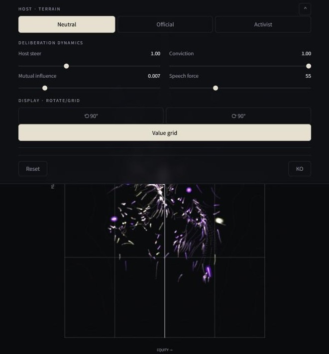

프로그래밍 언어로 회화 작업하기
시뮬레이션 로그를 오래 들여다보던 시기가 있었다. 화면에 있는 것은 발언 문장들과 의견 임베딩의 변화뿐인데, 그 안에서 물리적인 힘이 작용하고 있다는 느낌을 받았다. 완고한 사람은 남의 말에 잘 움직이지 않았다. 자기 입장과 충돌하는 주장을 들으면 오히려 반대 방향으로 굳었다. 생각이 비슷한 사람끼리는 가까워지고 함께 움직였다. 사회자가 누구인지에 따라 판 전체가 한쪽으로 기울었다.
Deliberation Field는 이 힘들을 그린 회화다. 물감 대신 코드와 수식으로 그렸다. 이 작품을 전시했던 베를린의 현장에 대해선 앞선 글에서 전했고, 오늘은 작업 과정에 대해 이야기해보고자 한다.
화면 위에서 참여자 한 명은 점 하나다. 크기가 큰 점은 공개발언을 할 수 있는 발언자, 작은 입자들은 속마음만 생각할 수 있는 방청객이고, 모든 참여자는 각 발언마다 자신의 의견이 설득되기도 하고 반발하기도 한다. 참여자 \(i\)의 위치 \(\mathbf{p}_i = (e_i, f_i)\)에서 \(e_i\)는 형평성, \(f_i\)는 실현 가능성에 대한 입장이고, 위치가 곧 의견이다. 이 값은 임의로 정하지 않았다. 각 참여자가 생성한 발언과 속마음 텍스트를 임베딩한 뒤 semantic projection1으로 두 축에 투영해 얻는다. 두 축은 각 개념의 양극을 나타내는 기준어로 정의했고, 아래의 거리 기준값들도 이렇게 투영된 실제 분포에서 정했다. 말이 바뀌면 점이 움직인다.
처음에는 의견 사이에 인력과 척력만 두었다. 발언자 \(j\)의 말을 들은 참여자는 자신의 기준 입장 \(\mathbf{h}_i\)와의 거리 \(d = \lVert \mathbf{p}_j - \mathbf{h}_i \rVert\)를 본다. \(d < d_0\)이면 그쪽으로 끌리고, \(d \ge d_0\)이면 반대 방향으로 밀린다. \(d_0 = 0.26\)이고, 뒤의 항이 양극화를 만든다. 그런데 이것만으로는 같은 발언을 듣고도 크게 흔들리는 사람과 거의 움직이지 않는 사람의 차이가 나오지 않았다. 그래서 자기 입장을 고수하는 정도 \(c_i \in [0,1]\)을 두었다. 완고함이고, 질량에 해당한다. 끌림의 크기가 \((1 - 0.85\,c_i)\)에 비례하므로 무거운 점은 잘 밀리지 않는다. 전시장에서 “상호 영향력(Mutual influence)”이라는 이름으로 열어 둔 슬라이더가 이 항 전체에 곱해지는 계수, 코드의 params.neighborInfluence다. 이 값을 키우면 끌림과 반발이 함께 세진다.
완고함 하나로도 부족했다. 남의 말에 민감하게 반응하면서도 결국 자기 입장으로 돌아오는 사람이 있었고, 좀처럼 반응하지 않다가 한번 움직이면 크게 움직이는 사람도 있었다. 이 둘이 같은 값으로 뭉개졌다. 그래서 반응 민감도 \(r_i \in [0,1]\)을 완고함과 분리했다. 완고함은 입장을 얼마나 지키는가이고, 민감도는 발언에 얼마나 즉각 반응하는가다. 이 밖에 가까운 점끼리 서로 끌리는 응집(\(R_c = 0.12\))과, 기준 입장으로 되돌아가려는 복원력 \(\mathbf{F}^{\text{home}}_i = k_h(\mathbf{h}_i - \mathbf{p}_i)\)(\(k_h = 0.006\))이 있다. “의견 고수(Conviction)” 슬라이더는 이 복원력과 반발, 응집에 한꺼번에 곱해지는 계수 params.hold다.
가장 오래 고민한 것은 사회자다. 사회자의 성향이 긍정적인지 중립적인지 부정적인지에 따라 토론의 양상이 확연히 달라진다는 것은 시뮬레이션에서 이미 보았다. 처음에는 사회자도 움직이는 점 하나로 두었다. 그런데 점 하나로는 판 전체를 장악하는 힘이 표현되지 않았다. 사회자의 영향력은 좋은 자리에서 발언하는 힘이 아니라 판의 조건을 바꾸는 힘이다. 결국 사회자를 점이 아니라 지형으로 두었다. 사회자 유형마다 가치 공간 위에 포텐셜 \(\Phi\)를 정의하고, 모든 점이 \(\mathbf{F}^{\text{host}}_i = -k\,\nabla\Phi(\mathbf{p}_i)\,(1 - 0.5\,c_i)\)를 따라 그 기울기를 흐르게 했다. 여기서 \(k\)가 “사회자 유도(Host steer)” 슬라이더, 코드의 params.hostStrength다. 완고한 점일수록 덜 따라간다. 전시장에서는 사회자 자체도 관객이 바꿀 수 있었다. 공무원, 활동가, 중립. 코드에서 사회자는 이렇게 정의된다.
// The host is not a dot but a global force on the whole value terrain.
case "activist":
// Negative on the development: well tilted toward equity-protection,
// steeper, and amplifies resistance & cohesion so the field knots up.
return {
driveTarget: { x: 0.8, y: 0.18 },
slope: 0.0032,
resistanceMul: 1.4,
cohesionMul: 1.8,
};매 프레임 이 힘들을 합해 속도와 위치를 갱신한다. \(\mathbf{v}_i \leftarrow (\mathbf{v}_i + \mathbf{F}_i)\,\beta_i\)이고 감쇠 \(\beta_i = 0.88 - 0.14\,c_i\)다. \(\lVert \mathbf{v}_i \rVert\)가 \(v_{\max} = 0.012\)를 넘으면 그 크기로 자른다. 마지막으로 \(\mathbf{p}_i \leftarrow \mathbf{p}_i + \mathbf{v}_i\)다.
이 움직임을 그리는 데 쓴 것이 p5.js이다. Processing 언어에서 이어진, 코드로 그림을 그리기 위해 만들어진 프로그래밍 언어로, 이 작품을 만들기 위해 독학으로 익혔다. 이 작업에서 나는 선을 최대한 자제하고 점 입자들로 물리적인 힘의 역학을 표현하고자 했다. 몇 번의 시행착오 끝에 지나간 움직임을 지우지 않고 잔상으로 남기는 방식을 택했고, 위의 힘들을 매 프레임 계산해 점을 움직였다. 잔상은 화면을 지우는 대신 옅은 베일을 덮고 그 위에 빛을 더하는 방식이다.
// afterimage veil: fade toward the ground, then add marks on top
paint.fill(GROUND[0], GROUND[1], GROUND[2], params.fade * 255);
paint.rect(vp.ox, vp.oy, vp.w, vp.h);
paint.blendMode(paint.ADD);
for (const a of sim.agents) {
const [x, y] = mapPoint(a.pos.x, a.pos.y, vp);
drawMark(paint, a, x, y, colorFor(a), sc, params.brush);
}공을 많이 들인 부분은 그리는 코드 자체가 아니라 구조였다. 상태를 계산하는 부분(sim/)과 그림을 그리는 부분(render/)을 분리하고, 두 쪽이 같은 계수 묶음(Params)을 UI와 함께 공유하게 만드는 일이었다. 이렇게 나눠야 물리 역학의 상태와 렌더링을 각각 다룰 수 있었다. 점묘와 잔상으로 표현해야겠다는 생각은 처음부터 머릿속에 있었지만, 실제로는 이 분리를 끝내고 나서야 구현이 가능해졌다.
프로그래밍 언어로 그릴 때의 장점은 그림이 상태로 존재한다는 것이다. 값을 바꾸면 그림이 바로 바뀐다. 완고함과 민감도를 나누고 사회자를 지형으로 바꾼 과정은 전부, 값을 고치고 화면을 확인하고 다시 고치는 반복이었다. 전시에서는 이 성질을 관객에게도 열어 두었다. 화면의 Adjust 패널로 사회자를 바꾸고 계수 네 개를 움직일 수 있게 했는데, 슬라이더 하나를 미는 일은 위 수식의 계수 하나를 실시간으로 고치는 일과 같다. 계수가 바뀌면 판이 즉시 다르게 흐른다. 물감으로 그렸다면 매번 처음부터 다시 그려야 했을 일이다.

또 하나의 장점은 전달이다. 완성된 이미지가 아니라 이미지를 만드는 원리를 건넬 수 있다. 그림만 받은 사람은 결과를 보지만, 코드와 수식을 함께 받은 사람은 그 결과가 나온 이유까지 읽는다. 사람만이 아니다. 이 코드베이스를 AI 모델에게 주면 모델은 구조를 읽고 함께 고칠 수 있다. 완성된 그림만 주고받을 때는 되지 않는 일이다. 코드는 공개해 두었다. (링크: https://github.com/youngjour/p5-placehearing)
이 작품에서 눈이 가장 오래 머무는 것은 방청객, 발언하지 않는 다수다. 실제 공청회에서 이들의 입장 변화는 드러나지 않는다. 발언하지 않기 때문이다. 시뮬레이션 안에서는 이들이 매 단계 속으로 입장을 어떻게 바꾸는지 기록되고, 화면 위에 안개처럼 쌓인다. 들리지 않는 다수를 보이게 하는 일, 내가 계속 다뤄 온 잠재된 공중의 문제가 여기서는 회화의 문제가 된다.
프로그래밍 언어는 정보를 전달하는 도구이면서 회화의 재료가 된다. 그리고 상태와 그림을 분리해 둔 덕에, 그리는 쪽은 다른 도구로 바꿔 끼울 수 있다. 다음에는 three.js 같은 도구로 도면과 3차원 모델까지 같은 방식으로 다룰 수 있을지 시험해 보려 한다.
Deliberation Field는 웹에서 직접 볼 수 있다. 화면 모서리의 Adjust를 열면 이 글의 계수들을 직접 움직여 볼 수 있다.
다른 노트
| 날짜 | 제목 |
|---|---|
| 2026-08-04 | 베를린 전시에서 배운 것: Data Art에 대한 관객들의 열정적인 호기심 |
| 2026-07-19 | 사람들의 의견을 그리는 일: Deliberation Field |
| 2026-07-14 | 풀 수 없다고 증명하고 접었던 문제 하나: 체류시간 |
| 2026-06-29 | Public(공중)에 대한 논의: Dewey의 글과 학생 시절 작업 하나 |
각주
Grand, G., Blank, I. A., Pereira, F., & Fedorenko, E. (2022). Semantic projection recovers rich human knowledge of multiple object features from word embeddings. Nature Human Behaviour, 6(7), 975–987.↩︎